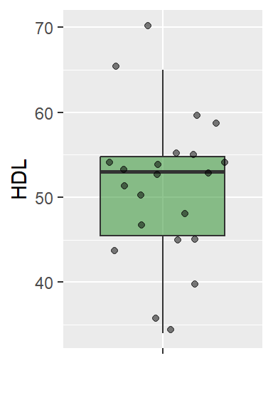
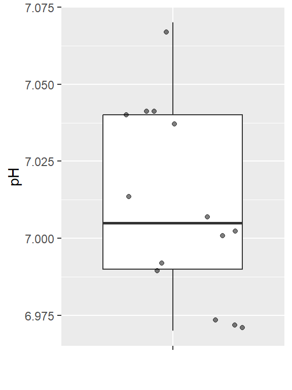
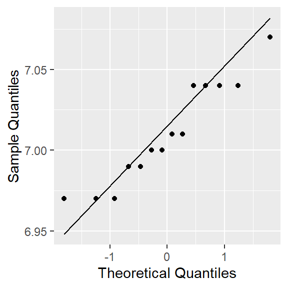
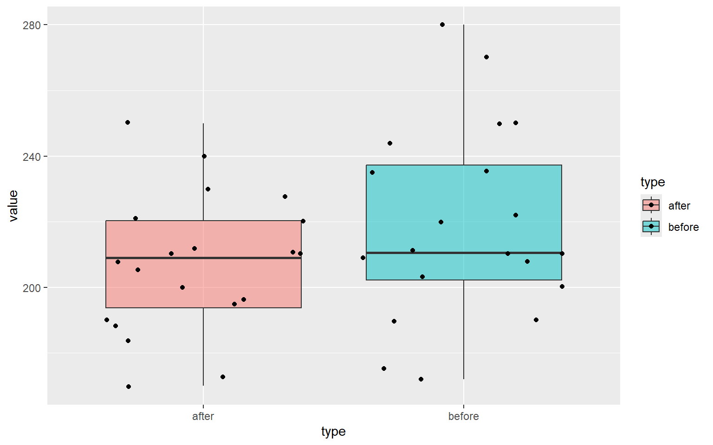
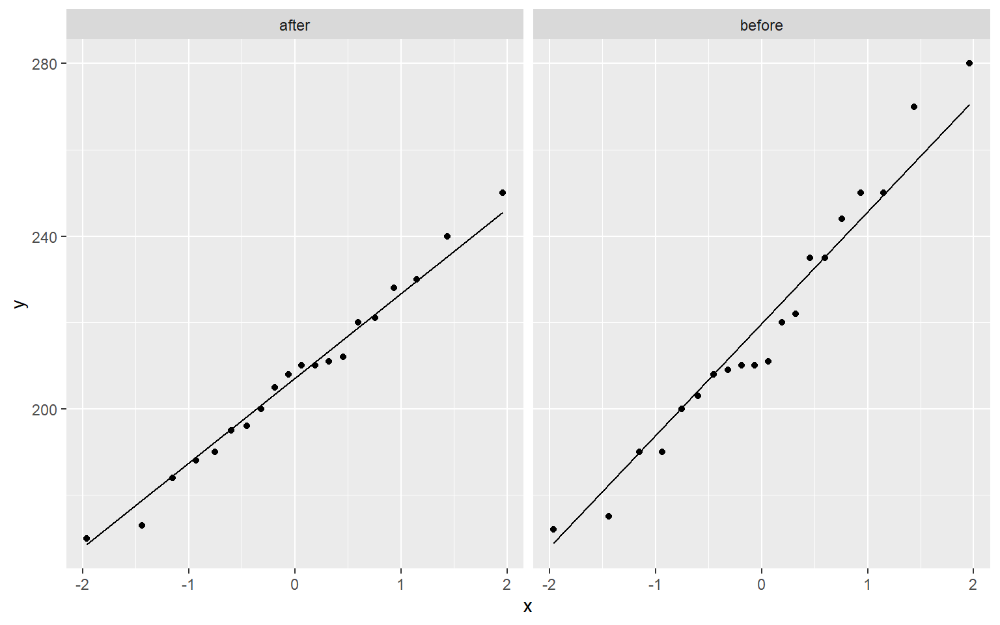
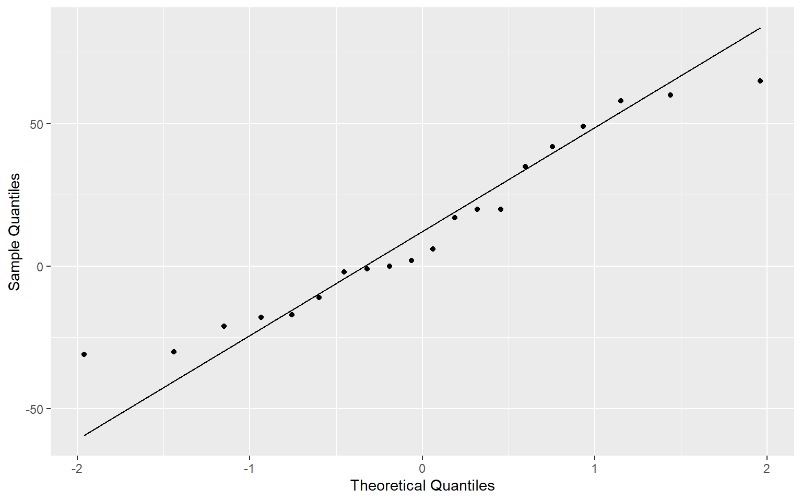

HDL <- c(65, 47, 51, 54, 70, 55, 44, 48, 36, 53, 45, 34, 59, 45, 54, 50, 40, 60, 53, 53, 54, 55)9 Statistical Inference: Hypothesis Testing
In this section we talk about parametric statistical hypothesis testing.
A hypothesis in statistics is a statement about a population parameter that we want to test using sample data. In hypothesis testing, we always deal with two contradictory statements: the null hypothesis and the alternative hypothesis.
9.1 Hypothesis Testing for a Population Mean
Two-tailed Test
Tests if the population mean is different from a specific value \mu_0 in either direction.
Hypotheses:
H_0: \mu = \mu_0
H_a: \mu \neq \mu_0
Right-tailed Test
Tests if the population mean is greater than a specific value \mu_0.
Hypotheses:
H_0: \mu = \mu_0
H_a: \mu > \mu_0
Left-tailed Test
Tests if the population mean is less than a specific value \mu_0.
Hypotheses:
H_0: \mu = \mu_0
H_a: \mu < \mu_0
9.2 One-Sample Mean Test
We test whether the population mean equals a hypothesized value \mu_0.
(a) z-test for mean
Use when: - Random sample - Population standard deviation \sigma is known - Either population is normally distributed or sample size n \ge 30
Hypotheses:
H_0: \mu = \mu_0 \quad \text{vs} \quad H_1: \mu \ne \mu_0
Test statistic:
z = \frac{\bar{x} - \mu_0}{\sigma / \sqrt{n}}
(b) t-test for mean
Use when: - Random sample - Population standard deviation \sigma is unknown - Population is normally distributed or sample is small (n<30)
Test statistic:
t = \frac{\bar{x} - \mu_0}{s / \sqrt{n}}, \quad df = n-1
9.3 One-Sample Proportion Test
Use when: - Random sample - Sample size large enough for normal approximation: n p_0 \ge 5 and n (1-p_0) \ge 5
Hypotheses:
H_0: p = p_0 \quad \text{vs} \quad H_1: p \ne p_0
Test statistic:
z = \frac{\hat{p} - p_0}{\sqrt{p_0 (1 - p_0)/n}}
9.4 Two-Sample Mean Test
We compare means from two populations.
(a) Independent samples, equal variances
Use when: - Two random independent samples - Populations normally distributed or sample sizes large - Population variances assumed equal
Hypotheses:
H_0: \mu_1 = \mu_2 \quad vs \quad H_1: \mu_1 \ne \mu_2
Test statistic:
t = \frac{\bar{x}_1 - \bar{x}_2}{s_p \sqrt{\frac{1}{n_1} + \frac{1}{n_2}}}, \quad s_p^2 = \frac{(n_1-1)s_1^2 + (n_2-1)s_2^2}{n_1+n_2-2}
- Degrees of freedom: df = n_1 + n_2 - 2
(b) Independent samples, unequal variances (Welch’s t-test)
Use when: - Two random independent samples - Populations normally distributed - Population variances not equal
Test statistic:
t = \frac{\bar{x}_1 - \bar{x}_2}{\sqrt{\frac{s_1^2}{n_1} + \frac{s_2^2}{n_2}}}
- Degrees of freedom approximated by Welch-Satterthwaite formula
(c) Paired Sample t-test
Use when: - Random sample of paired observations (e.g., before-after measurements) - Differences are normally distributed
Hypotheses:
H_0: \mu_d = 0 \quad vs \quad H_1: \mu_d \ne 0
Test statistic:
t = \frac{\bar{d}}{s_d / \sqrt{n}}, \quad df = n-1
9.5 Variance Test (Chi-Square Test)
Use when: - Random sample - Population is normally distributed
Hypotheses:
H_0: \sigma^2 = \sigma_0^2
Test statistic:
\chi^2 = \frac{(n-1)s^2}{\sigma_0^2} \sim \chi^2_{n-1}
9.6 Summary Table of Tests
| Test | Use When | Distribution / Conditions |
|---|---|---|
| One-sample mean z-test | Random sample, σ known, normal population or n≥30 | z |
| One-sample mean t-test | Random sample, σ unknown, normal population or small n | t, df=n-1 |
| One-sample proportion | Random sample, np0≥5, n(1-p0)≥5 | z (normal approx) |
| Two-sample mean (independent) | Two random independent samples, normal or large n, equal/unequal variances | t |
| Paired-sample mean | Random sample of paired differences, normal differences | t, df=n-1 |
| Variance test | Random sample, normal population | χ², df=n-1 |
9.7 Questions
Question 1
As reported by the US National Centre for Health Statistics, the mean serum high density (HDL) cholesterol of female 20 - 29 years old is 53. Dr Jack Hall claims that the HDL Cholesterol level of female 20 - 29 years old is greater than 53. He uses the following data, randomly gathered from 22 individuals.
It is known from past research that the distribution of the HDL cholesterol is normally distributed and the corresponding population variance is 81. Test the claim that the HDL level is greater than 53 at \alpha=0.01 level of significance.
library(ggplot2)
HDL.df <- data.frame(HDL=HDL)
ggplot(HDL.df, aes(y=HDL, x="")) +
geom_boxplot(outlier.shape = NA, fill="forestgreen", alpha=0.5) +
geom_jitter(alpha=0.5) + labs(x = "")
Question 2
A chemist wants to measure the bias in a pH meter. She uses the meter to measure the pH in 14 neutral substances (pH=7) and obtains the data below.
ph <- c( 7.01, 7.04, 6.97, 7.00, 6.99, 6.97, 7.04, 7.04, 7.01, 7.00, 6.99, 7.04, 7.07, 6.97)Is there sufficient evidence to support the claim that the pH meter is not correctly calibrated at the \alpha=0.05 level of significance?
Answer:
ph.df <- data.frame(pH=ph)
ggplot(ph.df, aes(y=pH, x="")) +
geom_boxplot(outlier.shape = NA) +
geom_jitter(alpha=0.5) +
labs(x = "")
In this case, we have only sixteen observations, meaning that the Central Limit Theorem does not apply. With a small sample, we should only use the t-test if we can reasonably assume that the population is normally distributed. Hence, we must first verify that pH is normally distributed.
ggplot(ph.df,
aes(sample=pH))+
stat_qq() + stat_qq_line()+labs(x="Theoretical Quantiles", y="Sample Quantiles")
shapiro.test(ph.df$pH)
Shapiro-Wilk normality test
data: ph.df$pH
W = 0.91603, p-value = 0.1927Hypothesis to be tested:
H0: Data are normally distributed.
H1: Data are not normally distributed.
According to the Shapiro-Wilk normality test p-value, 0.19 > 0.05. Hence, we do not reject H0 at the 0.05 level of significance. We can conclude data are normally distributed.
Now we can proceed with the t.test.
Hypothesis to be tested.
H0: \mu=7
H1: \mu \neq 7
\mu - Population mean pH value (in neutral substances).
t.test syntax
t.test(x, y = NULL,
alternative = c("two.sided", "less", "greater"),
mu = 0, paired = FALSE, var.equal = FALSE,
conf.level = 0.95, ...)t.test(ph.df$pH, alternative = "two.sided", mu=7)
One Sample t-test
data: ph.df$pH
t = 1.1832, df = 13, p-value = 0.2579
alternative hypothesis: true mean is not equal to 7
95 percent confidence interval:
6.991742 7.028258
sample estimates:
mean of x
7.01 Decision: p-value (0.258) > \alpha = 0.05. Hence, we do not reject Ho.
Conclusion: We do not have enough evidence to conclude that the population mean pH level is different from 7 at the 0.05 level of significance.
Question 3
Approach 1
A dietician hopes to reduce a person’s cholesterol level by using a special diet supplemented with a combination of vitamin pills. Twenty (20) subjects were pre-tested and then placed on diet for two weeks. Their cholesterol levels were checked after the two week period. The results are shown below. Cholesterol levels are measured in milligrams per decilitre.
Test the claim that the Cholesterol level before the special diet is greater than the Cholesterol level after the special diet at \alpha=0.01 level of significance.
Construct 99% confidence interval for the difference in mean cholesterol levels. Assume that the cholesterol levels are normally distributed both before and after.
id <- 1:20
before <- c(210, 235, 208, 190, 172, 244, 211, 235, 210,
190, 175, 250, 200, 270, 222, 203, 209, 220, 250, 280)
after <- c(190, 170, 210, 188, 173, 195, 228, 200, 210, 184,
196, 208, 211, 212, 205, 221, 240, 250, 230, 220)
cholesterol_1 <- data.frame(id=id, before=before, after=after)
head(cholesterol_1) id before after
1 1 210 190
2 2 235 170
3 3 208 210
4 4 190 188
5 5 172 173
6 6 244 195library(tidyverse)
cholesterol_2 <- pivot_longer(cholesterol_1, before:after, names_to = "type", values_to = "value")
head(cholesterol_2)# A tibble: 6 × 3
id type value
<int> <chr> <dbl>
1 1 before 210
2 1 after 190
3 2 before 235
4 2 after 170
5 3 before 208
6 3 after 210ggplot(data= cholesterol_2, aes(x=type, y=value)) +
geom_boxplot(outlier.shape = NA, aes(fill=type), alpha=0.5) +
geom_jitter(aes(fill=type)) 
2.1.1 Testing for Normality
ggplot(data = cholesterol_2, aes(sample = value)) +
stat_qq() +
stat_qq_line() +
facet_grid(. ~ type) 
2.1.2 Paired t-test
Hypothesis:
H0: \mu_{before} \leq \mu_{after}
H1: \mu_{before} > \mu_{after}
\mu_{before} - population mean cholesterol level before the special diet
\mu_{after} - population mean cholesterol level after the special diet
t.test(before, after, data=cholesterol_1, "greater", paired=TRUE)
Paired t-test
data: before and after
t = 1.7754, df = 19, p-value = 0.04593
alternative hypothesis: true mean difference is greater than 0
95 percent confidence interval:
0.3167385 Inf
sample estimates:
mean difference
12.15 Decision: ____________________
Conclusion: ___________________
Approach 2
approach2_tbl <- tibble(diff = cholesterol_1$before - cholesterol_1$after)2.1.3 Testing for Normality
ggplot(approach2_tbl,
aes(sample=diff))+
stat_qq() + stat_qq_line()+
labs(x="Theoretical Quantiles", y="Sample Quantiles")
shapiro.test(approach2_tbl$diff)
Shapiro-Wilk normality test
data: approach2_tbl$diff
W = 0.93729, p-value = 0.213H0: \mu_{d} \leq 0
H0: \mu_{d} > 0,
where: \mu_d = \mu_{before} - \mu_{after}
One Sample t-test
data: approach2_tbl$diff
t = 1.7754, df = 19, p-value = 0.04593
alternative hypothesis: true mean is greater than 0
95 percent confidence interval:
0.3167385 Inf
sample estimates:
mean of x
12.15 Decision: _________
Conclusion: ____________